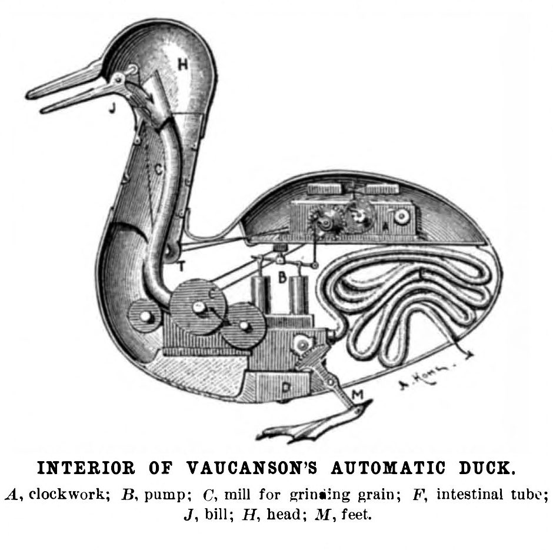

In the 18th and 19th century, horses did not have "brains" as we think of them now. They were mechanical beings possessed of weight (mass) and forces.

Vaucanson's Digesting Duck — the machine as living thing
René Descartes laid this theory down in writing in the 1630s–1640s. The view continued to influence European science through the 17th and into the 18th century. The relevant passages are in Section V of Discourse on Method, and are best understood from his own words:
"And this proves not merely that the beasts have less reason than men, but that they have none at all."
This is the foundation of the "animal-machine" doctrine, which did three powerful things: it justified vivisection, it normalised force-based animal training, and it removed the need to consider animal agency.
This fit beautifully into early modern science because it allowed researchers to study bodies without confronting consciousness. It also fit beautifully into military and agricultural training systems — if the horse is a machine of weight and force, then training is simply the art of applying correct mechanical pressure. No cognition required.
A brute as big as a horse and with strength to match was a prized asset — but only if that power could be harnessed by man. With wars looming and the cavalry being the nuclear weapon of the day, time was tight and the stakes were high.
Baucher — Méthode d'Équitation, 1874
Baucher and the Army
M. Baucher writes in his 1842 book Méthode d'équitation basée sur de nouveaux principes: "The horse, like all organized beings is possessed of a weight and force peculiar to himself." He describes instinctive forces and transmitted forces. The task of the rider was to harness these forces at will — but "the education of the horse consists of the complete subjection of his powers."
Armies had cavalry officers and they all needed horses. There were tens if not hundreds of thousands of horses actively enlisted at the time. Men who could tame these animals and make them submit to their will were highly prized. Men like François Baucher — who had a method that was easy to follow, repeat and duplicate — were revered.
Baucher's training manual for army officers was first published in 1842. It was so popular that in the first year two editions were published, and since then seven more — making nine editions in eight years. After this the French Minister of War decreed that Baucher's method be installed across France, which it was, to enormous success.
His Method of Horsemanship was reprinted in Belgium and translated into Dutch and German. Pupils of his continued his work, and it is still cited today in classical dressage circles. However, context matters — and the context has been forgotten.
Enjoyed this essay?
Follow Dressage for the Future for new essays and daily research updates.